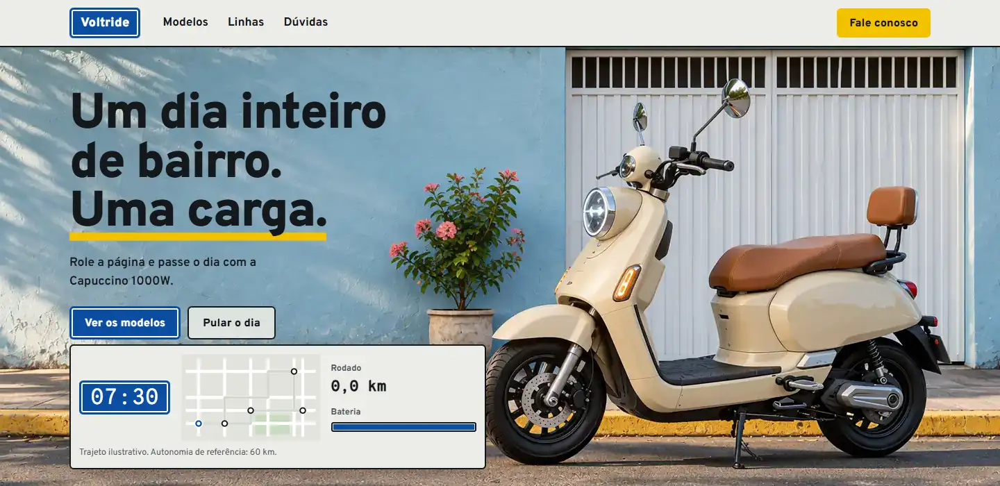
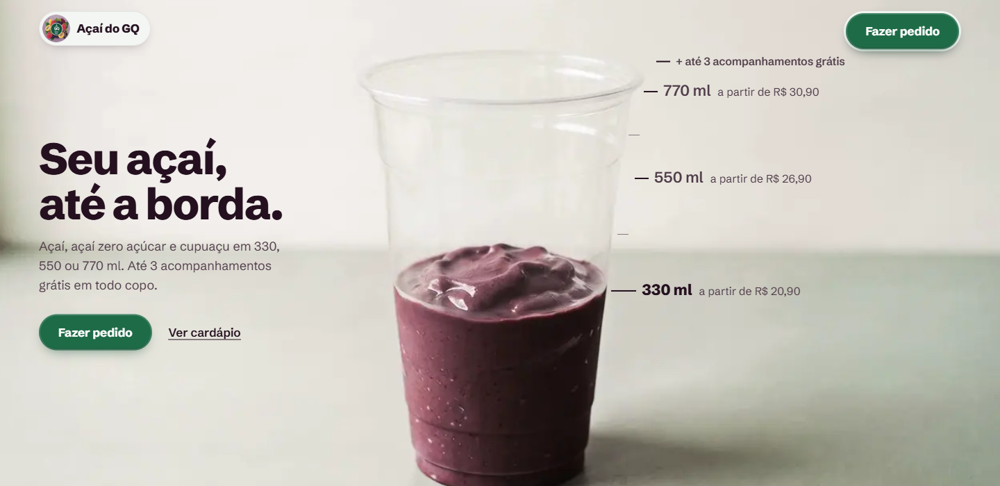
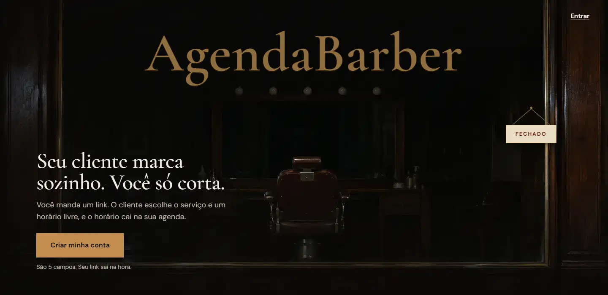
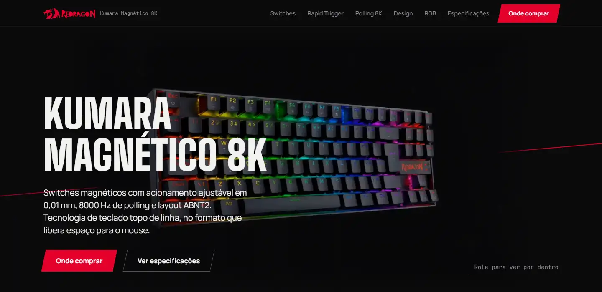
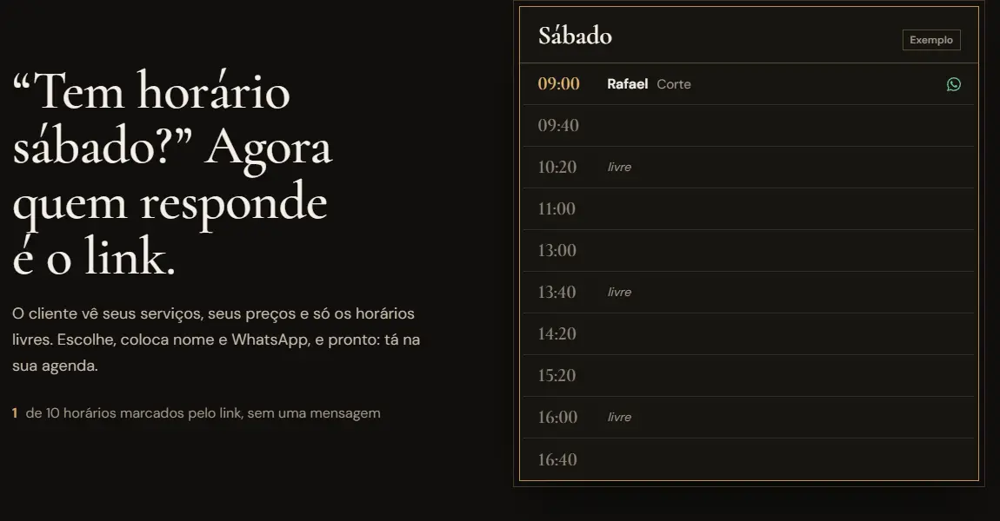

Volt Ride
Enquanto você rola, a scooter passa o dia no bairro: padaria de manhã, trabalho, feira na volta, e ainda sobra bateria.
Projeto conceito. Angular e TypeScript.
Visitar o siteLanding pages com direção de arte e o sistema por trás, do banco ao pixel.

Açaí do GQ. Cliente real. Visitar o site

Enquanto você rola, a scooter passa o dia no bairro: padaria de manhã, trabalho, feira na volta, e ainda sobra bateria.
Projeto conceito. Angular e TypeScript.
Visitar o site
A barbearia acende as luzes e a placa vira para Aberto. O barbeiro manda um link e o cliente marca sozinho.
Uso real. Java com Spring Boot, Angular e Docker.
Visitar o site
O teclado se desmonta em camadas no scroll, da tecla até a placa, para mostrar o switch magnético por dentro.
Projeto conceito. Angular. Marca de terceiros, sem vínculo.
Visitar o siteQuer um site assim para o seu? Me conta o que você vende.
Quero um site assimSou desenvolvedor back-end em Java. Quando o site precisa de agenda ou pedido online, eu escrevo a API e o painel e coloco tudo no ar num domínio seu.

No dia a dia: Java, Spring Boot, PostgreSQL, Angular, TypeScript, Python, Docker e Git.
Estudo Análise e Desenvolvimento de Sistemas na Estácio desde 2025. Antes do código, fiz suporte bilíngue na Concentrix, em português e inglês. Hoje faço sites e sistemas para pequenos negócios e procuro minha primeira vaga como dev back-end.
Baixar currículo (PDF)Me chama no WhatsApp e conta o que você vende. Se for sobre vaga CLT ou estágio, o currículo está logo abaixo.